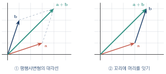
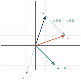
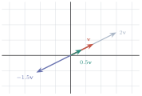
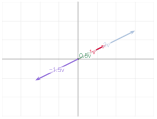
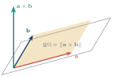
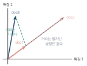
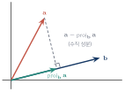

벡터를 다루는 기본적인 연산
이 장을 마치면
우리가 자연수를 처음 배울 때 가장 먼저 하는 일은 더하고 빼는 것이다. 벡터도 수량이므로 마찬가지다. 이 장에서는 벡터를 더하고, 빼고, 늘이고, 곱하는 방법을 배운다.
그런데 벡터의 "곱셈"은 스칼라와 사정이 다르다. 벡터를 곱하는 방법이 하나가 아니라 셋이나 되기 때문이다. 성분끼리 곱하는 방법, 곱해서 스칼라를 만드는 방법, 곱해서 새로운 벡터를 만드는 방법이 각각 존재하며 쓰임새도 완전히 다르다. 그중에서도 내적은 이 책에서 가장 자주 쓰게 될 연산이자, 인공지능 모델의 심장부에 놓인 연산이다. 두 임베딩의 유사도, 어텐션의 점수, 합성곱의 한 칸이 모두 내적이다.
4.1 벡터를 서로 더하고 빼기
성분별로 더한다
같은 차원의 두 벡터는 성분의 개수가 같으므로, 대응하는 성분끼리 더하면 된다.
\(\vv{a}, \vv{b} \in \Rsp{n}\)에 대하여 합과 차는 다음과 같이 성분별로 정의된다.
3차원 벡터의 예를 보자.
덧셈이 각 축에서 독립적으로 이루어진다는 점이 중요하다. \(x\)축 성분은 \(x\)축 성분끼리만 관여하며 다른 축에 영향을 주지 않는다. 이 독립성이 선형대수가 다루기 쉬운 근본적인 이유다.
덧셈의 두 가지 그림
벡터의 덧셈을 기하적으로 설명하는 방법은 두 가지다.

①은 두 벡터가 만드는 평행사변형의 대각선이 합이라는 설명이다. 물리에서 두 힘의 합력을 구할 때 쓰는 방식이다.
②는 \(\vv{a}\)의 끝점에서 \(\vv{b}\)를 이어 붙이는 방식이다. "더한다"는 개념에는 이쪽이 더 충실하다. \(\vv{a}\)만큼 이동한 뒤 이어서 \(\vv{b}\)만큼 이동하면 결국 \(\vv{a}+\vv{b}\)만큼 이동한 것과 같다. 벡터를 이동으로 보는 관점이며, 벡터가 셋 이상일 때도 그대로 확장된다.
import numpy as np
import matplotlib.pyplot as plt
from lautils import *
a = np.array([3., 1.])
b = np.array([1., 3.])
print('a + b =', a + b)
print('a - b =', a - b)
fig, ax = new_axes(xlim=(-1, 5), ylim=(-1, 5))
draw_vector(ax, a, color='crimson', label='a')
draw_vector(ax, b, origin=a, color='royalblue', label='b') # a 끝에서 시작
draw_vector(ax, a + b, color='seagreen', label='a+b')
plt.show()a + b = [4. 4.] a - b = [ 2. -2.]
draw_vector()의 origin 인자가 여기서 진가를 발휘한다. \(\vv{b}\)를 원점이 아니라 \(\vv{a}\)의 끝점에서 그리게 하면 덧셈의 의미가 그대로 그림이 된다.
뺄셈은 음벡터를 더하는 것
\(\vv{a} - \vv{b}\)는 \(\vv{a} + (-\vv{b})\)로 이해할 수 있다. 여기서 \(-\vv{b}\)는 \(\vv{b}\)의 모든 성분의 부호를 뒤집은 벡터로, 크기는 같고 방향이 정반대인 음벡터negative vector다.
뺄셈에는 아주 유용한 해석이 하나 더 있다. \(\vv{a} - \vv{b}\)는 \(\vv{b}\)의 끝점에서 \(\vv{a}\)의 끝점으로 가는 벡터다. 실제로 \(\vv{b} + (\vv{a}-\vv{b}) = \vv{a}\)이므로, \(\vv{b}\)에 이 벡터를 이어 붙이면 \(\vv{a}\)에 도달한다.

이 해석은 실전에서 매우 자주 쓰인다. 두 데이터 점 사이의 차이 벡터가 곧 이것이며, 그 길이가 두 점 사이의 거리다.
import numpy as np
import matplotlib.pyplot as plt
from lautils import *
a = np.array([3., 1.])
b = np.array([1., 3.])
d = a - b
fig, ax = new_axes(xlim=(-1, 5), ylim=(-1, 5))
draw_vector(ax, a, color='crimson', label='a')
draw_vector(ax, b, color='royalblue', label='b')
draw_vector(ax, d, origin=b, color='seagreen', label='a-b') # b 끝에서 시작
print('두 점 사이의 거리 :', np.linalg.norm(d))
plt.show()두 점 사이의 거리 : 2.8284271247461903
덧셈의 성질
\(\vv{u}, \vv{v}, \vv{w} \in \Rsp{n}\)이고 \(c, d\)가 스칼라일 때 다음이 성립한다.
이 여덟 가지 성질은 모두 성분별로 확인하면 즉시 증명된다. 예를 들어 (1)은 각 성분에서 \(u_i + v_i = v_i + u_i\)가 성립하기 때문이다. 실수의 성질이 그대로 벡터로 올라온 것이다.
당연해 보이는 성질을 왜 굳이 나열할까? 나중에 이 여덟 가지가 벡터공간의 정의 그 자체가 되기 때문이다. "이 여덟 성질을 만족하는 모든 집합을 벡터공간이라고 부르자"고 약속하면, 화살표뿐 아니라 함수, 다항식, 행렬까지 모두 벡터로 취급할 수 있게 된다. 이 확장은 8장에서 다룬다.
import numpy as np
rng = np.random.default_rng(42)
u, v, w = rng.normal(0, 1, (3, 5)) # 5차원 벡터 3개
c, d = 2.5, -1.3
print(np.allclose(u + v, v + u)) # (1)
print(np.allclose((u + v) + w, u + (v + w))) # (2)
print(np.allclose(c * (u + v), c * u + c * v)) # (5)
print(np.allclose((c + d) * u, c * u + d * u)) # (6)True True True True
4.2 스칼라 곱과 벡터의 크기
스칼라 곱 — 방향은 그대로, 길이만
벡터 \(\vv{v}\)에 스칼라 \(c\)를 곱하는 것을 스칼라 곱scalar multiplication이라 한다. 계산은 단순하다. 모든 성분에 \(c\)를 곱하면 된다.
기하적으로는 방향은 그대로 둔 채 길이만 \(\abs{c}\)배 하는 것이다. 단 \(c\)가 음수이면 방향이 정반대로 뒤집힌다.

\(c > 1\)이면 늘어나고, \(0 < c < 1\)이면 줄어들며, \(c < 0\)이면 뒤집힌다. \(c = 0\)이면 영벡터가 된다. 벡터를 스칼라로 나누는 것은 그 역수를 곱하는 것과 같다.
import numpy as np
import matplotlib.pyplot as plt
from lautils import *
v = np.array([1.5, 0.75])
fig, ax = new_axes(xlim=(-4, 4), ylim=(-3, 3))
for c, color in [(2, 'lightsteelblue'), (1, 'crimson'),
(0.5, 'seagreen'), (-1.5, 'mediumpurple')]:
draw_vector(ax, c * v, color=color, label=f'{c}v')
plt.show()벡터의 크기 — 노름
벡터의 길이를 어떻게 재야 할까? 2차원에서는 피타고라스 정리를 쓰면 된다. 성분이 \((v_1, v_2)\)인 벡터는 밑변 \(v_1\), 높이 \(v_2\)인 직각삼각형의 빗변이므로 길이는 \(\sqrt{v_1^2 + v_2^2}\)이다. 이 계산은 차원이 늘어나도 그대로 확장된다.
벡터 \(\vv{v} \in \Rsp{n}\)의 크기 또는 노름norm은 다음과 같이 정의된다.
\(\vv{v} = (3, 4)\)의 크기를 구하시오.
import numpy as np
v = np.array([3., 4.])
print('norm :', np.linalg.norm(v))
print('직접 계산 :', np.sqrt((v ** 2).sum()))
print('3차원 예 :', np.linalg.norm([1., 2., 2.]))norm : 5.0 직접 계산 : 5.0 3차원 예 : 3.0
np.linalg.norm으로 벡터의 크기 구하기길이를 재는 방법이 유클리드 노름 하나만 있는 것은 아니다.
이 구분은 머신러닝에서 중요하다. 모델의 가중치를 작게 유지하는 정규화 항으로 \(L_2\)를 쓰면 릿지(ridge) 회귀가 되고, \(L_1\)을 쓰면 라쏘(lasso) 회귀가 되는데, 후자는 일부 가중치를 정확히 0으로 만들어 특징 선택 효과를 낸다.
v = np.array([3., -4.])
print(np.linalg.norm(v, 2)) # 5.0
print(np.linalg.norm(v, 1)) # 7.0
print(np.linalg.norm(v, np.inf)) # 4.0정규화 — 방향만 남기기
크기가 1인 벡터를 단위벡터라고 했다. 어떤 벡터든 자기 크기로 나누면 단위벡터가 된다.
\(\vv{v} \neq \zerovec\)일 때 다음 벡터를 \(\vv{v}\)의 정규화normalization라 하며, \(\vv{v}\)와 방향이 같은 단위벡터가 된다.
정규화는 크기 정보를 버리고 방향만 남기는 조작이다. 이것이 왜 유용한지는 곧 이어지는 코사인 유사도에서 분명해진다. 두 문서가 얼마나 비슷한 주제를 다루는지 판단할 때, 문서의 길이(단어 수)는 방해가 될 뿐이다. 방향만 비교하면 길이의 영향을 없앨 수 있다.
import numpy as np
import matplotlib.pyplot as plt
from lautils import *
vs = np.array([[3., 4.], [-2., 1.], [1., -3.], [4., 1.]])
units = vs / np.linalg.norm(vs, axis=1, keepdims=True) # 행마다 정규화
print('원래 크기 :', np.linalg.norm(vs, axis=1))
print('정규화 후 :', np.linalg.norm(units, axis=1))
fig, ax = new_axes(xlim=(-4, 5), ylim=(-4, 5))
theta = np.linspace(0, 2 * np.pi, 200) # 단위원 그리기
ax.plot(np.cos(theta), np.sin(theta), color='gray', ls='--', lw=1)
draw_vectors(ax, vs, alpha=0.35)
draw_vectors(ax, units)
plt.show()원래 크기 : [5. 2.23606798 3.16227766 4.12310563] 정규화 후 : [1. 1. 1. 1.]

np.linalg.norm(vs, axis=1, keepdims=True)에서 두 인자가 중요하다. axis=1은 "각 행마다 노름을 구하라"는 뜻이고, keepdims=True는 결과의 형상을 (4,)가 아니라 (4,1)로 유지하라는 뜻이다. 후자가 있어야 브로드캐스팅으로 행마다 나눗셈이 제대로 이루어진다.
keepdims=True를 빠뜨리면 형상이 (4,)가 되어, (4,2) 배열과 나눌 때 열 방향으로 브로드캐스팅되어 버린다. 오류는 나지 않지만 완전히 틀린 결과가 나온다. 형상이 맞는지 늘 확인하자.
- 스칼라 곱은 방향을 유지한 채 길이만 바꾼다. 음수를 곱하면 방향이 뒤집힌다.
- 노름 \(\norm{\vv{v}} = \sqrt{\sum v_i^2}\)은 피타고라스 정리를 \(n\)차원으로 확장한 것이다.
- \(\hat{\vv{v}} = \vv{v}/\norm{\vv{v}}\)는 크기를 버리고 방향만 남긴다.
- 여러 벡터를 한꺼번에 정규화할 때는
axis=1, keepdims=True를 잊지 말자.
4.3 벡터를 곱하는 여러 가지 방법
스칼라의 곱셈은 하나뿐이지만, 벡터의 곱셈은 셋이나 된다. 결과가 무엇인지에 따라 이름과 쓰임새가 달라진다.
| 이름 | 결과 | 넘파이 | 주된 쓰임 |
|---|---|---|---|
| 아다마르곱 | 벡터 | a * b | 성분별 가중치 적용, 마스킹 |
| 내적(점곱) | 스칼라 | a @ b | 유사도, 각도, 정사영 — 이 책의 주역 |
| 외적(가위곱) | 벡터 | np.cross | 3차원의 수직 방향, 넓이 |
아다마르곱 — 성분끼리 곱하기
아다마르곱Hadamard product은 같은 위치의 성분끼리 곱하는 가장 단순한 곱셈이다. 기호로는 \(\odot\)을 쓴다.
수학 교과서에서는 크게 다루지 않지만, 딥러닝에서는 매우 자주 등장한다. 각 뉴런에 개별 가중치를 곱할 때, LSTM의 게이트가 정보를 선택적으로 통과시킬 때, 드롭아웃이 일부 뉴런을 꺼 버릴 때 모두 아다마르곱이 쓰인다.
import numpy as np
a = np.array([1., 2., 3., 4.])
gate = np.array([1., 0., 1., 0.]) # 게이트: 통과 / 차단
print('a * a :', a * a) # 성분별 제곱
print('마스킹 :', a * gate) # 2번, 4번 성분을 차단a * a : [ 1. 4. 9. 16.] 마스킹 : [1. 0. 3. 0.]
넘파이에서 a * b는 아다마르곱이지 내적이 아니다. 수학책에서 \(\vv{a}\vv{b}\)나 \(\vv{a}\cdot\vv{b}\)로 적힌 것을 코드로 옮길 때 *를 쓰면 완전히 다른 결과가 나온다. 내적은 반드시 @ 또는 np.dot()을 써야 한다.
내적 — 이 책에서 가장 중요한 연산
\(\vv{a}, \vv{b} \in \Rsp{n}\)에 대하여 내적inner product 또는 점곱dot product은 성분별 곱을 모두 더한 스칼라이다.
식 \(\eqref{eq:ch04_dot}\)만 보면 그저 곱해서 더한 숫자일 뿐이다. 그런데 이 숫자가 놀라운 기하적 의미를 가진다.
두 벡터 \(\vv{a}, \vv{b}\) 사이의 각을 \(\theta\)라 하면 다음이 성립한다.
즉 내적은 두 벡터의 길이와 그 사이 각의 코사인을 곱한 값이다. 이 식으로부터 다음이 즉시 따라온다.
| 내적의 부호 | 각도 | 의미 |
|---|---|---|
| \(\vv{a}\cdot\vv{b} > 0\) | \(\theta < 90^\circ\) | 대체로 같은 방향을 향한다 |
| \(\vv{a}\cdot\vv{b} = 0\) | \(\theta = 90^\circ\) | 직교한다 (수직) |
| \(\vv{a}\cdot\vv{b} < 0\) | \(\theta > 90^\circ\) | 대체로 반대 방향을 향한다 |
특히 두 번째 줄이 결정적이다. 내적이 0이라는 것은 두 벡터가 수직이라는 뜻이며, 이 사실 하나가 정사영, 최소제곱, QR 분해, 주성분 분석까지 이어지는 긴 사슬의 출발점이다.

\(\vv{a} = (3, 1)\), \(\vv{b} = (-1, 3)\)의 내적을 구하고 두 벡터의 관계를 말하시오.
import numpy as np
import matplotlib.pyplot as plt
from lautils import *
a = np.array([3., 1.])
b = np.array([-1., 3.])
c = np.array([2., 3.])
print('a . b =', a @ b) # 0 -> 직교
print('a . c =', a @ c) # 양수 -> 예각
print('b . c =', b @ c) # 양수 -> 예각
fig, ax = new_axes(xlim=(-3, 4), ylim=(-2, 4))
draw_vectors(ax, [a, b, c], labels=['a', 'b', 'c'])
plt.show()a . b = 0.0 a . c = 9.0 b . c = 7.0
2차원에서 코사인 제2법칙을 쓰면 확인할 수 있다. 두 벡터 \(\vv{a}, \vv{b}\)와 차이 벡터 \(\vv{a}-\vv{b}\)가 이루는 삼각형에서
내적의 성질
\(\vv{u}, \vv{v}, \vv{w} \in \Rsp{n}\)이고 \(c\)가 스칼라일 때
(4)는 특히 자주 쓰인다. 노름을 구하려고 제곱근을 취하는 대신 내적만 계산하면 되는 경우가 많기 때문이다. 거리를 비교하기만 할 때는 제곱근을 생략해도 순서가 바뀌지 않는다.
외적 — 3차원에서 수직 방향 찾기
외적cross product은 3차원 벡터에서만 정의되며, 결과가 스칼라가 아니라 벡터라는 점이 내적과 다르다.
\(\vv{a}, \vv{b} \in \Rsp{3}\)의 외적은 다음과 같다.

외적은 컴퓨터 그래픽스에서 결정적으로 중요하다. 삼각형 면의 법선 벡터(면이 향하는 방향)를 구하는 표준적인 방법이 두 변의 외적이며, 이 법선이 있어야 빛이 어떻게 반사되는지 계산할 수 있다. 13장에서 다시 다룬다.
import numpy as np
a = np.array([1., 0., 0.])
b = np.array([0., 1., 0.])
n = np.cross(a, b)
print('a x b :', n) # z축 방향
print('a와 수직인가 :', np.isclose(n @ a, 0))
print('b와 수직인가 :', np.isclose(n @ b, 0))
print('b x a :', np.cross(b, a)) # 순서를 바꾸면 방향이 뒤집힘
# 삼각형의 넓이 = 평행사변형 넓이의 절반
p, q, r = np.array([0., 0., 0.]), np.array([4., 0., 0.]), np.array([1., 3., 0.])
area = np.linalg.norm(np.cross(q - p, r - p)) / 2
print('삼각형 넓이 :', area)a x b : [0. 0. 1.] a와 수직인가 : True b와 수직인가 : True b x a : [ 0. 0. -1.] 삼각형 넓이 : 6.0
외적은 교환법칙이 성립하지 않는다. \(\vv{a}\times\vv{b} = -(\vv{b}\times\vv{a})\)이므로 순서를 바꾸면 방향이 정반대가 된다. 그래픽스에서 삼각형 정점의 순서(감기 방향)가 중요한 이유가 바로 이것이다. 순서가 뒤바뀌면 면이 반대쪽을 향하게 되어 화면에서 사라진다.
4.4 내적의 활용: 각도, 유사도, 정사영
각도 구하기
식 \(\eqref{eq:ch04_dotangle}\)을 \(\cos\theta\)에 대해 풀면 두 벡터 사이의 각을 구하는 공식이 나온다.
이 값은 언제나 \(-1\)과 1 사이에 놓인다. 두 벡터를 각각 정규화한 뒤 내적한 것과 같은 값이므로, "방향만 남겨 놓고 잰 내적"이라고 이해하면 된다.
import numpy as np
def angle_between(a, b, degree=True):
"""두 벡터 사이의 각을 구한다."""
cos = (a @ b) / (np.linalg.norm(a) * np.linalg.norm(b))
cos = np.clip(cos, -1.0, 1.0) # 부동소수점 오차로 1을 넘는 것 방지
rad = np.arccos(cos)
return np.degrees(rad) if degree else rad
a = np.array([1., 0.])
print(angle_between(a, np.array([1., 1.]))) # 45도
print(angle_between(a, np.array([0., 1.]))) # 90도
print(angle_between(a, np.array([-1., 0.]))) # 180도45.00000000000001 90.0 180.0
np.clip(cos, -1, 1) 한 줄이 반드시 필요하다. 부동소수점 오차 때문에 계산 결과가 1.0000000000000002처럼 나올 수 있는데, 이 값을 np.arccos()에 넣으면 nan이 돌아온다. 실무 코드에서 흔히 만나는 버그다.
코사인 유사도 — 인공지능이 "비슷하다"를 판단하는 방법
식 \(\eqref{eq:ch04_costheta}\)의 우변 자체를 코사인 유사도cosine similarity라고 부른다. 각도를 구하지 않고 코사인 값을 그대로 유사도로 쓰는 것이다.
이것이 인공지능에서 가장 널리 쓰이는 유사도 척도다. 문장을 벡터로 바꾼 임베딩끼리 비교할 때, 검색어와 문서를 비교할 때, 추천 시스템에서 취향이 비슷한 사용자를 찾을 때 모두 이 값을 쓴다.
왜 유클리드 거리가 아니라 코사인일까? 크기의 영향을 없애기 위해서다. 같은 주제를 다루는 짧은 문서와 긴 문서는 단어 빈도 벡터의 크기가 크게 다르지만 방향은 비슷하다. 코사인 유사도는 방향만 보므로 문서의 길이에 흔들리지 않는다.
import numpy as np
def cosine_similarity(a, b):
return (a @ b) / (np.linalg.norm(a) * np.linalg.norm(b))
# 단어 [고양이, 강아지, 주식, 금리] 의 등장 횟수로 만든 문서 벡터
doc1 = np.array([8., 6., 0., 1.]) # 반려동물 글 (짧음)
doc2 = np.array([40., 33., 2., 3.]) # 반려동물 글 (김)
doc3 = np.array([0., 1., 12., 9.]) # 경제 기사
print('doc1 vs doc2 :', cosine_similarity(doc1, doc2))
print('doc1 vs doc3 :', cosine_similarity(doc1, doc3))
print('유클리드 거리 doc1-doc2 :', np.linalg.norm(doc1 - doc2))
print('유클리드 거리 doc1-doc3 :', np.linalg.norm(doc1 - doc3))doc1 vs doc2 : 0.9973196227157772 doc1 vs doc3 : 0.09928333399068708 유클리드 거리 doc1-doc2 : 41.96427051671457 유클리드 거리 doc1-doc3 : 17.233687939614086
결과를 보라. 같은 주제인 doc1과 doc2의 코사인 유사도는 0.997로 거의 1이지만, 유클리드 거리로는 오히려 doc3보다 멀다. 길이가 다르다는 이유만으로 같은 주제의 문서가 다른 주제의 문서보다 "멀다"고 판정된 것이다. 이 예가 코사인 유사도를 쓰는 이유를 그대로 보여 준다.

현대 언어 모델의 핵심인 어텐션(attention) 메커니즘은 다음 식으로 시작한다.
\(\sqrt{d}\)로 나누는 이유도 이 장의 내용으로 설명된다. 차원 \(d\)가 커지면 내적의 값이 대체로 \(\sqrt{d}\)에 비례해 커지므로, 그대로 두면 소프트맥스가 극단적으로 치우친다. 그래서 크기를 되돌려 놓는 것이다.
정사영 — 그림자의 길이
내적의 또 다른 얼굴은 정사영projection이다. 벡터 \(\vv{a}\)를 벡터 \(\vv{b}\) 방향으로 비추었을 때 생기는 그림자를 생각해 보자.
\(\vv{a}\)를 \(\vv{b}\) 위로 정사영한 벡터는 다음과 같다.
식 \(\eqref{eq:ch04_proj}\)은 복잡해 보이지만 구조는 간단하다. \(\vv{b}\) 방향의 단위벡터 \(\hat{\vv{b}}\)를 만들고, 그 방향으로 얼마나 나아갈지를 내적으로 정한 것이다.

정사영의 진짜 가치는 그림 4.8의 점선에 있다. \(\vv{a}\)에서 그림자를 빼고 남은 \(\vv{a} - \proj_{\vv{b}}\vv{a}\)는 \(\vv{b}\)에 수직이다. 즉 정사영은 임의의 벡터를 "\(\vv{b}\) 방향 성분"과 "\(\vv{b}\)에 수직인 성분"으로 쪼개는 도구다. 이 분해가 최소제곱법(12장)과 QR 분해(12장)의 뼈대가 된다.
import numpy as np
import matplotlib.pyplot as plt
from lautils import *
def project(a, b):
"""a를 b 위에 정사영한 벡터"""
return (a @ b) / (b @ b) * b
a = np.array([1.5, 2.8])
b = np.array([4., 1.])
p = project(a, b)
r = a - p # 나머지(잔차) 벡터
print('정사영 :', p)
print('잔차 :', r)
print('잔차와 b의 내적 :', r @ b) # 0이어야 한다
fig, ax = new_axes(xlim=(-1, 5), ylim=(-1, 4))
draw_vector(ax, b, color='royalblue', label='b')
draw_vector(ax, a, color='crimson', label='a')
draw_vector(ax, p, color='seagreen', label='proj')
ax.plot([a[0], p[0]], [a[1], p[1]], color='gray', ls='--')
plt.show()정사영 : [2.07058824 0.51764706] 잔차 : [-0.57058824 2.28235294] 잔차와 b의 내적 : -8.881784197001252e-16
잔차와 \(\vv{b}\)의 내적이 정확히 0으로 나왔다. 이 성질 — 잔차는 언제나 투영 대상에 수직이다 — 는 우연이 아니라 정사영의 정의로부터 따라 나온다. 실제로
이 된다.
- 내적은 성분곱의 합이자 \(\norm{\vv{a}}\norm{\vv{b}}\cos\theta\)이다. 계산과 기하가 만나는 지점이다.
- 내적이 0이면 직교, 양수면 예각, 음수면 둔각이다.
- 코사인 유사도는 정규화된 내적으로, 크기의 영향을 없애고 방향만 비교한다. 인공지능에서 "비슷하다"를 판단하는 표준 도구다.
- 정사영은 벡터를 특정 방향 성분과 그에 수직인 성분으로 쪼갠다. 잔차는 언제나 투영 대상에 수직이다.
- 덧셈의 두 그림을 나란히 그리자. \(\vv{a}=(3,1)\), \(\vv{b}=(1,3)\)의 합을 평행사변형 방식과 꼬리–머리 방식으로 각각 그리시오.
import numpy as np import matplotlib.pyplot as plt from lautils import * a = np.array([3., 1.]) b = np.array([1., 3.]) fig, (ax1, ax2) = plt.subplots(1, 2, figsize=(9, 4.5)) for ax in (ax1, ax2): ax.set_xlim(-1, 5); ax.set_ylim(-1, 5) ax.set_aspect('equal'); ax.grid(True, alpha=0.3) ax.axhline(0, color='black', lw=0.8); ax.axvline(0, color='black', lw=0.8) # ① 평행사변형 draw_polygon(ax1, np.array([[0, 0], a, a + b, b]), color='goldenrod', alpha=0.2) draw_vector(ax1, a, color='crimson', label='a') draw_vector(ax1, b, color='royalblue', label='b') draw_vector(ax1, a + b, color='seagreen', label='a+b') ax1.set_title('parallelogram') # ② 꼬리-머리 draw_vector(ax2, a, color='crimson', label='a') draw_vector(ax2, b, origin=a, color='royalblue', label='b') draw_vector(ax2, a + b, color='seagreen', label='a+b') ax2.set_title('head to tail') plt.show() - 정규화를 눈으로 확인하자. 무작위 벡터 12개를 그리고, 정규화한 결과가 모두 단위원 위에 놓이는지 확인하시오.
import numpy as np import matplotlib.pyplot as plt from lautils import * rng = np.random.default_rng(42) V = rng.normal(0, 1.5, (12, 2)) U = V / np.linalg.norm(V, axis=1, keepdims=True) fig, ax = new_axes(xlim=(-4, 4), ylim=(-4, 4), figsize=(5, 5)) t = np.linspace(0, 2 * np.pi, 300) ax.plot(np.cos(t), np.sin(t), color='gray', ls='--', lw=1) for v, u in zip(V, U): draw_vector(ax, v, color='lightsteelblue', width=0.008) draw_vector(ax, u, color='crimson', width=0.010) plt.show() print('정규화 후 크기 :', np.round(np.linalg.norm(U, axis=1), 6)) - 내적의 부호를 색으로 확인하자. 기준 벡터 \(\vv{a}=(3,1)\)을 고정하고, 원 위에 놓인 24개의 벡터에 대해 내적의 부호에 따라 색을 다르게 칠하시오.
import numpy as np import matplotlib.pyplot as plt from lautils import * a = np.array([3., 1.]) t = np.linspace(0, 2 * np.pi, 24, endpoint=False) V = np.column_stack([3 * np.cos(t), 3 * np.sin(t)]) fig, ax = new_axes(xlim=(-4, 4), ylim=(-4, 4), figsize=(5, 5)) for v in V: d = a @ v color = 'crimson' if d > 0.01 else ('royalblue' if d < -0.01 else 'black') draw_vector(ax, v, color=color, width=0.008) draw_vector(ax, a, color='seagreen', width=0.016, label='a') plt.show()붉은색은 \(\vv{a}\)와 예각, 파란색은 둔각을 이루는 벡터다. 두 색을 가르는 경계선이 정확히 \(\vv{a}\)에 수직인 직선이 된다. 내적의 부호는 공간을 두 쪽으로 나눈다는 사실을 눈으로 확인할 수 있으며, 이것이 곧 분류기의 결정 경계다.
- 각도를 재는 함수를 만들자. 두 벡터 사이의 각을 도(degree) 단위로 반환하는 함수를 작성하고, 여러 벡터 쌍에 대해 시험하시오.
import numpy as np def angle_between(a, b): cos = (a @ b) / (np.linalg.norm(a) * np.linalg.norm(b)) return np.degrees(np.arccos(np.clip(cos, -1.0, 1.0))) pairs = [([1, 0], [1, 1]), ([1, 0], [0, 1]), ([1, 0], [-1, 1]), ([1, 0], [-1, 0]), ([1, 1, 0], [0, 1, 1])] for a, b in pairs: a, b = np.array(a, float), np.array(b, float) print(f'{str(a):>18} vs {str(b):>18} : {angle_between(a, b):6.2f} deg') - 코사인 유사도로 문서를 분류하자. 다섯 개의 문서 벡터를 만들고 모든 쌍의 코사인 유사도를 행렬로 계산하여 그림으로 표시하시오.
import numpy as np import matplotlib.pyplot as plt from lautils import * # 단어 [고양이, 강아지, 주식, 금리, 백신] 등장 횟수 docs = np.array([[8., 6., 0., 1., 0.], # 반려동물 [40., 33., 2., 3., 1.], # 반려동물 (긴 글) [0., 1., 12., 9., 0.], # 경제 [1., 0., 20., 15., 2.], # 경제 [0., 0., 1., 0., 14.]]) # 의학 U = docs / np.linalg.norm(docs, axis=1, keepdims=True) S = U @ U.T # 모든 쌍의 코사인 유사도를 한 번에! fig, ax = plt.subplots(figsize=(4.5, 4)) show_matrix(ax, S, fmt='{:.2f}', cmap='YlOrRd', title='cosine similarity') plt.tight_layout(); plt.show()핵심은
U @ U.T한 줄이다. 정규화된 벡터들을 행으로 쌓은 뒤 자기 자신의 전치와 곱하면, 모든 쌍의 코사인 유사도가 한 번에 계산된다. 이중 반복문이 행렬 곱 하나로 사라졌다. 검색 엔진과 추천 시스템이 실제로 쓰는 방식이다. - 정사영으로 벡터를 분해하자. 임의의 벡터를 주어진 방향의 성분과 그에 수직인 성분으로 나누고, 두 성분의 합이 원래 벡터가 되는지 확인하시오.
import numpy as np import matplotlib.pyplot as plt from lautils import * def project(a, b): return (a @ b) / (b @ b) * b a = np.array([2., 3.5]) b = np.array([4., 1.]) p = project(a, b) # b 방향 성분 r = a - p # b에 수직인 성분 print('p + r == a ? :', np.allclose(p + r, a)) print('r . b :', round(r @ b, 12)) fig, ax = new_axes(xlim=(-1, 5), ylim=(-1, 4.5)) draw_vector(ax, b, color='royalblue', label='b') draw_vector(ax, a, color='crimson', label='a') draw_vector(ax, p, color='seagreen', label='parallel') draw_vector(ax, r, origin=p, color='mediumpurple', label='perpendicular') plt.show() - 외적으로 삼각형 메시의 법선을 구하자. 3차원 삼각형 네 개의 법선 벡터를 각각 구하고 단위 길이로 정규화하시오.
import numpy as np tris = np.array([ [[0., 0., 0.], [1., 0., 0.], [0., 1., 0.]], [[0., 0., 0.], [0., 1., 0.], [0., 0., 1.]], [[1., 0., 0.], [0., 1., 0.], [0., 0., 1.]], [[0., 0., 1.], [1., 0., 1.], [0., 1., 1.]], ]) for k, T in enumerate(tris): n = np.cross(T[1] - T[0], T[2] - T[0]) area = np.linalg.norm(n) / 2 print(f'triangle {k}: normal={np.round(n / np.linalg.norm(n), 3)}, ' f'area={area:.3f}')triangle 0: normal=[0. 0. 1.], area=0.500 triangle 1: normal=[1. 0. 0.], area=0.500 triangle 2: normal=[0.577 0.577 0.577], area=0.866 triangle 3: normal=[0. 0. 1.], area=0.500
3번 삼각형의 법선이 \((0.577, 0.577, 0.577)\)인 것은 세 축에 대해 똑같이 기울어진 면이기 때문이다. \(0.577 \approx 1/\sqrt{3}\)임을 확인해 보자.
4장 요약
- 벡터의 덧셈과 뺄셈은 대응하는 성분끼리 이루어지며, 각 축에서 독립적으로 계산된다. 차원이 다른 벡터끼리는 정의되지 않는다.
- 덧셈에는 두 가지 그림이 있다. 평행사변형의 대각선과 꼬리에 머리를 잇는 방식이다. 후자가 "이동을 이어 붙인다"는 의미에 더 가깝고 벡터가 셋 이상일 때도 그대로 확장된다.
- \(\vv{a}-\vv{b}\)는 \(\vv{b}\)의 끝점에서 \(\vv{a}\)의 끝점으로 가는 벡터이며, 그 크기가 두 점 사이의 거리다.
- 벡터 덧셈과 스칼라 곱은 교환·결합·분배법칙 등 여덟 가지 성질을 만족한다. 이 여덟 가지가 나중에 벡터공간의 정의 그 자체가 된다(8장).
- 스칼라 곱 \(c\vv{v}\)는 방향을 유지한 채 길이를 \(\abs{c}\)배 한다. \(c<0\)이면 방향이 뒤집히고, \(c=0\)이면 영벡터가 된다.
- 벡터의 크기(노름)는 \(\norm{\vv{v}} = \sqrt{\sum_i v_i^2}\)이며 피타고라스 정리의 \(n\)차원 확장이다.
np.linalg.norm()으로 구한다. \(L_1\) 노름(성분 절댓값의 합)과 \(L_\infty\) 노름(최대 절댓값)도 쓰인다. - 정규화 \(\hat{\vv{v}} = \vv{v}/\norm{\vv{v}}\)는 크기를 버리고 방향만 남긴다. 여러 벡터를 한꺼번에 정규화할 때는
axis=1, keepdims=True가 필요하다. - 벡터의 곱셈은 세 가지다. 아다마르곱(
a * b, 성분별 곱, 결과는 벡터), 내적(a @ b, 결과는 스칼라), 외적(np.cross, 3차원 전용, 결과는 벡터). - 내적은 \(\vv{a}\cdot\vv{b} = \sum_i a_ib_i = \norm{\vv{a}}\norm{\vv{b}}\cos\theta\)이다. 계산 공식과 기하적 의미가 만나는 지점이며, 이 책에서 가장 중요한 연산이다.
- 내적의 부호가 관계를 알려 준다. 양수면 예각, 0이면 직교, 음수면 둔각이다. 특히 내적이 0이라는 조건이 정사영·최소제곱·QR 분해·주성분 분석으로 이어진다.
- 두 벡터 사이의 각은 \(\cos\theta = \frac{\vv{a}\cdot\vv{b}}{\norm{\vv{a}}\norm{\vv{b}}}\)로 구한다.
np.arccos()에 넣기 전np.clip(cos, -1, 1)로 부동소수점 오차를 막아야 한다. - 코사인 유사도는 정규화된 내적으로, 크기의 영향을 없애고 방향만 비교한다. 문서·임베딩·사용자 취향의 유사도를 재는 인공지능의 표준 도구이며, 유클리드 거리로는 잡아내지 못하는 유사성을 포착한다.
- 정규화된 벡터를 행으로 쌓은 행렬 \(\mm{U}\)에 대해 \(\mm{U}\mm{U}\tp\)가 모든 쌍의 코사인 유사도 행렬이다. 이중 반복문이 행렬 곱 한 번으로 대체된다.
- 정사영 \(\proj_{\vv{b}}\vv{a} = \frac{\vv{a}\cdot\vv{b}}{\vv{b}\cdot\vv{b}}\vv{b}\)는 \(\vv{a}\)가 \(\vv{b}\) 위에 드리우는 그림자다. 남은 성분 \(\vv{a}-\proj_{\vv{b}}\vv{a}\)는 언제나 \(\vv{b}\)에 수직이며, 이 분해가 최소제곱법의 뼈대가 된다.
- 외적 \(\vv{a}\times\vv{b}\)는 두 벡터에 모두 수직인 벡터이고 크기는 평행사변형의 넓이다. 교환법칙이 성립하지 않으며(\(\vv{a}\times\vv{b} = -\vv{b}\times\vv{a}\)), 그래픽스에서 면의 법선 벡터를 구할 때 쓰인다.
4장 연습문제
- ★ \(\vv{a} = (2, -1, 4)\), \(\vv{b} = (-3, 5, 1)\)일 때 다음을 손으로 계산하시오.
- \(\vv{a} + \vv{b}\) (2) \(\vv{a} - \vv{b}\) (3) \(3\vv{a} - 2\vv{b}\) (4) \(\norm{\vv{a}}\)
- ★ 문제 1의 결과를 넘파이로 확인하는 코드를 작성하시오.
- ★★ \(\vv{a} - \vv{b}\)가 "\(\vv{b}\)의 끝점에서 \(\vv{a}\)의 끝점으로 가는 벡터"인 이유를 설명하고, 그림으로 나타내시오.
- ★ 벡터 \((6, -8)\)을 정규화하고 그 크기가 1임을 확인하시오.
- ★★ 다음 두 벡터의 내적을 구하고 두 벡터가 이루는 각이 예각인지 직각인지 둔각인지 판정하시오.
- \((1, 2)\)와 \((4, -2)\)
- \((3, 1)\)과 \((2, 5)\)
- \((-1, 3)\)과 \((2, -1)\)
- ★★ \(\vv{a}=(1,0)\)과 각각 \(30^\circ\), \(60^\circ\), \(120^\circ\)를 이루는 단위벡터를 구하고, 내적이 각각 \(\cos 30^\circ\), \(\cos 60^\circ\), \(\cos 120^\circ\)와 같음을 코드로 확인하시오.
- ★★ 넘파이에서
a * b와a @ b의 차이를 설명하고, 각각의 결과와 형상을 예로 들어 보이시오. - ★★★ 다음 세 사용자의 영화 평점 벡터가 주어졌을 때, 코사인 유사도로 가장 취향이 비슷한 두 사람을 찾으시오. 유클리드 거리로 구한 결과와 비교하고 차이가 생기는 이유를 설명하시오.
액션 로맨스 코미디 다큐 사용자 A 5 1 4 2 사용자 B 1 5 2 4 사용자 C 10 2 8 4 - ★★ 벡터 \(\vv{a}=(3,4)\)를 \(\vv{b}=(1,0)\) 위에 정사영한 결과를 손으로 구한 뒤, 그 값이 \(\vv{a}\)의 \(x\)성분과 같은 이유를 설명하시오.
- ★★★ \(\vv{a}=(4,3)\)을 \(\vv{b}=(2,1)\) 위에 정사영하고, 잔차 \(\vv{r} = \vv{a}-\proj_{\vv{b}}\vv{a}\)가 \(\vv{b}\)에 수직임을 손 계산과 코드로 각각 확인하시오.
- ★★ 3차원 벡터 \(\vv{a}=(1,2,3)\), \(\vv{b}=(4,5,6)\)에 대해 \(\vv{a}\times\vv{b}\)를 구하고, 그 결과가 \(\vv{a}\)와 \(\vv{b}\) 모두에 수직임을 내적으로 확인하시오.
- ★★★ 세 점 \(P(1,1,0)\), \(Q(4,2,0)\), \(R(2,5,0)\)이 이루는 삼각형의 넓이를 외적으로 구하시오. 좌표평면 위의 점이므로 밑변\(\times\)높이\(/2\)로도 검산할 수 있다.
- ★★★ 원 위에 균등하게 놓인 36개의 벡터에 대해 기준 벡터 \((1,1)\)과의 코사인 유사도를 계산하고, 각도에 따른 유사도의 변화를 그래프로 그리시오. 어떤 함수의 모양이 나타나는가?
- ★★★ 100차원 공간에서 무작위로 뽑은 두 벡터의 코사인 유사도를 1000번 계산하여 히스토그램을 그리시오. 값이 대체로 0 근처에 몰리는 현상을 확인하고, 이것이 고차원 공간에서 "무작위 두 벡터는 거의 직교한다"는 사실을 뜻함을 설명하시오. (차원의 저주와 관련된 중요한 성질이다)